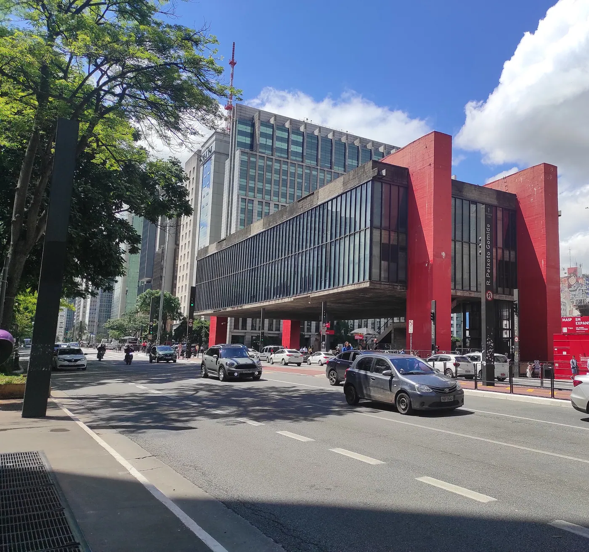
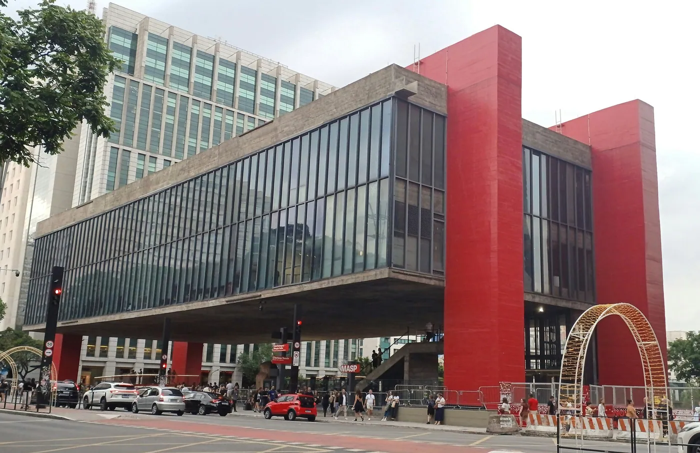
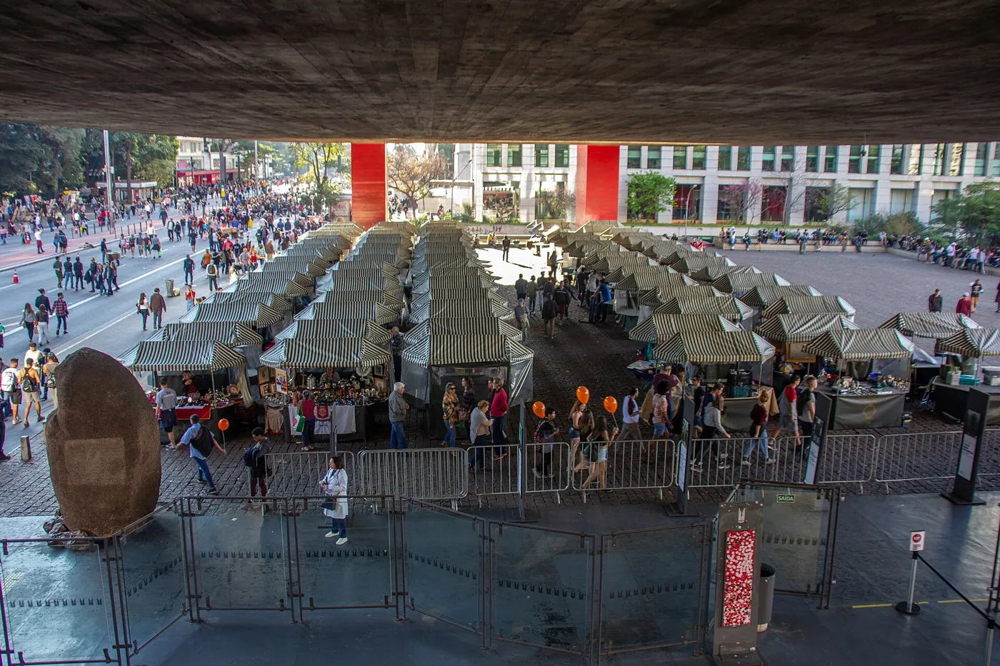
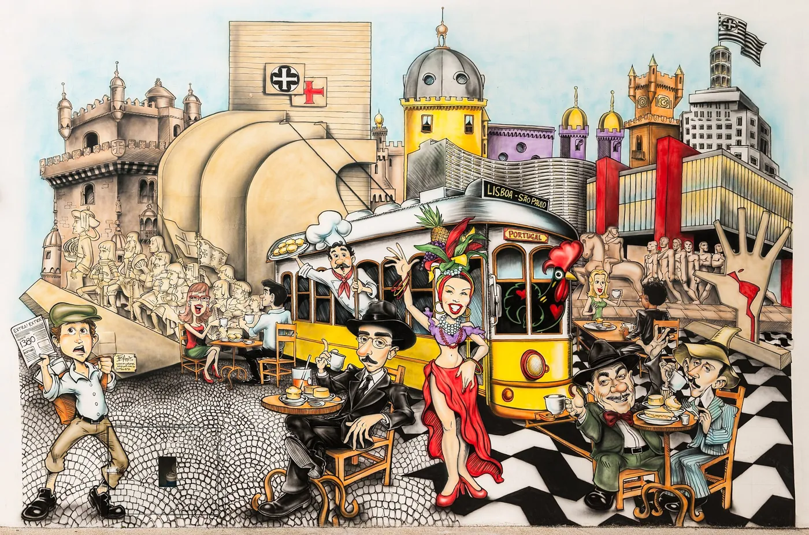
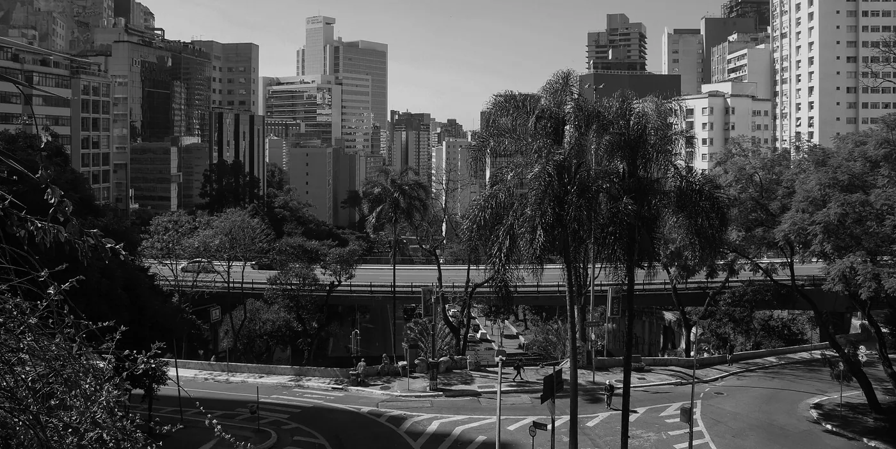

1/8 · Exterior · MASP, São Paulo Museum of Art view from NW /SO AvPhoto: Wilfredor · CC0 · source

2/8 · Exterior · MASP, São Paulo, BrasilPhoto: Photograph by Mike Peel ( www.mikepeel.net ) · CC BY-SA 4.0 · source

3/8 · Exterior · Museu de Arte de São Paulo (MASP), Avenida Paulista, São Paulo, capital do estado de São Paulo, BrasilPhoto: Marcos Elias de Oliveira Júnior · CC0 · source4/8 · Exterior · Museu de Arte de São Paulo Assis Chateaubriand em Julho de 2025Photo: Boaventuravinicius · CC BY-SA 4.0 · source5/8 · Interior · MASP, São Paulo, BrasilPhoto: Photograph by Mike Peel ( www.mikepeel.net ) · CC BY-SA 4.0 · source

6/8 · Context · MASP, São Paulo, BrazilPhoto: Photograph by Mike Peel ( www.mikepeel.net ) · CC BY-SA 4.0 · source

7/8 · Context · MASP, São Paulo, BrazilPhoto: Photograph by Mike Peel ( www.mikepeel.net ) · CC BY-SA 4.0 · source

8/8 · Context · Vista de São Paulo a partir do MASP em 31 de Julho de 2025Photo: Boaventuravinicius · CC BY 4.0 · source


,_S%C3%A3o_Paulo_(SP).jpg){kind=link}